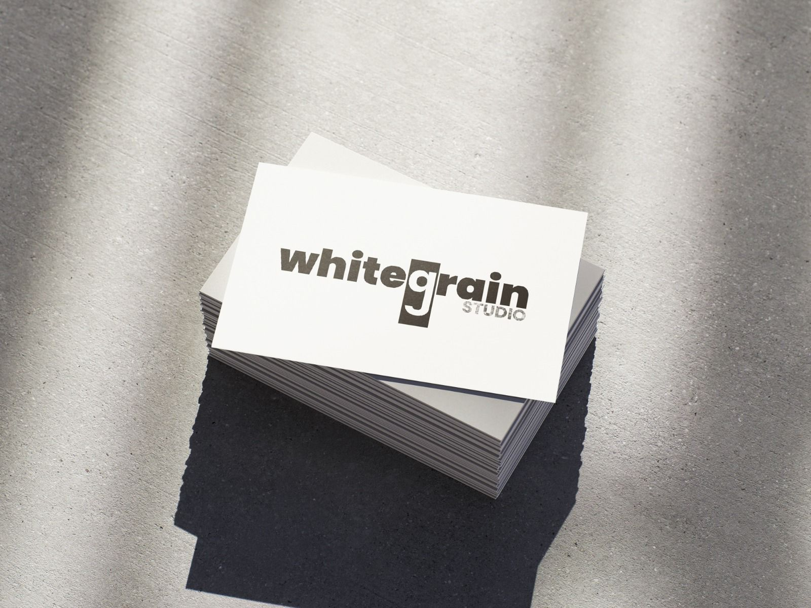
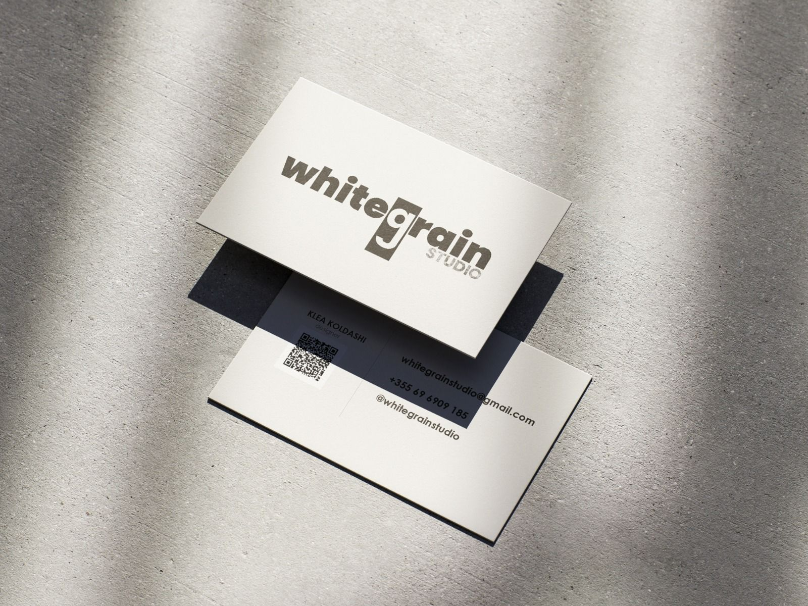

case study
Van Gogh Atelier
Një instalacion i frymëzuar nga atelier-i i Van Gogh, me tekstura të verdha të notuara dhe shkallë prej druri që lidhen me pikturat origjinale.
- Modelim 3D & kompozim
- Ilustrim arkitekturor
- Print & prezentim
studio vizuale / fotografi / koncept
White Grain Studio, i drejtuar nga Klea, është një multi-disciplinary designer që krijon visual identities & interior concepts — graphic design • branding • interior designs – duke i ngopur me teksturë, ritëm dhe kujtim taktil.


rreth studios
Unë jam Klea, studente art & design në Polis, e përqendruar tek bashkëbisedimi mes grafikës dhe interior-it. Portofoli im shkon nga identitetet që fillojnë në skicë të dorës deri tek konceptet hapësinore të prototipuara në 3D – një vijë biografie që më pëlqen ta quaj “multi-disciplinary designer crafting visual identities & interior concepts”.
case study
Një instalacion i frymëzuar nga atelier-i i Van Gogh, me tekstura të verdha të notuara dhe shkallë prej druri që lidhen me pikturat origjinale.
case study
Koncept për një hapësirë të lëvizshme shërbimi me panelim të personalizuar dhe grafikë fluid që rishkruajnë përvojën e klientit.
portfolio
Shto, hiq ose ndrysho punimet duke përditësuar listën në script.js.
procesi
Sesione research-i, moodboards dhe shënime të detajuara për materialet.
Set design, dritë natyrale/flash i butë dhe dokumentim foto/video + 3D.
Ngjyrosje fine art, optimizim për web/print dhe micro-guides për brand-in.
kontakto
Shkruaj për bashkëpunim, pyetje apo për të diskutuar një ide. Përgjigjem brenda 24 orësh dhe dërgoj një plan të shkurtër para se të nis produksioni.